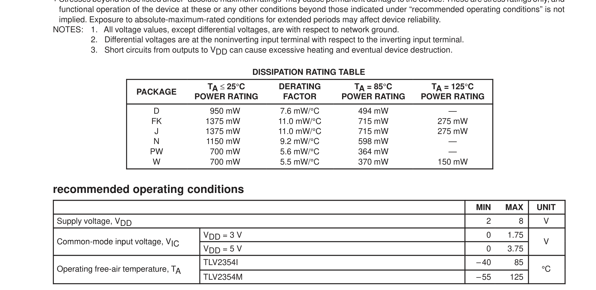

点下面任意一行 → 自动填字段102 行
- absolute maximum ratings over operating free-air temperature range (unless otherwise noted)†
- Supply voltage, VDD (see Note 1)
- . . . . . . . . . . . . . . . . . . . . . . . . . . . . . . . . . . . . . . . . . . . . . . . . . . . . . . . . . . . . .
- 8 V
- Differential input voltage, VID (see Note 2)
- . . . . . . . . . . . . . . . . . . . . . . . . . . . . . . . . . . . . . . . . . . . . . . . . . . . .
- ±8 V
- Input voltage range, VI
- . . . . . . . . . . . . . . . . . . . . . . . . . . . . . . . . . . . . . . . . . . . . . . . . . . . . . . . . . . . . . . . .
- –0.3 to 8 V
- Output voltage, VO
- . . . . . . . . . . . . . . . . . . . . . . . . . . . . . . . . . . . . . . . . . . . . . . . . . . . . . . . . . . . . . . . . . . . . . . . . . .
- 8 V
- Input current, II
- . . . . . . . . . . . . . . . . . . . . . . . . . . . . . . . . . . . . . . . . . . . . . . . . . . . . . . . . . . . . . . . . . . . . . . . . . .
- ±5 mA
- Output current, IO
- . . . . . . . . . . . . . . . . . . . . . . . . . . . . . . . . . . . . . . . . . . . . . . . . . . . . . . . . . . . . . . . . . . . . . . .
- 20 mA
- Duration of output short-circuit current to GND (see Note 3)
- . . . . . . . . . . . . . . . . . . . . . . . . . . . . . . . . .
- unlimited
- Continuous total power dissipation
- . . . . . . . . . . . . . . . . . . . . . . . . . . . . . . . . . . . . .
- See Dissipation Rating Table
- Operating free-air temperature range, TA: TLV2354I
- . . . . . . . . . . . . . . . . . . . . . . . . . . . . . . . . . . .
- –40°C to 85°C
- TLV2354M
- . . . . . . . . . . . . . . . . . . . . . . . . . . . . . . . . .
- –55°C to 125°C
- Storage temperature range
- . . . . . . . . . . . . . . . . . . . . . . . . . . . . . . . . . . . . . . . . . . . . . . . . . . . . . . . .
- –65°C to 150°C
- Lead temperature 1,6 mm (1/16 inch) from case for 10 seconds: D, N, or PW package
- . . . . . . . . . . . .
- 260°C
- Lead temperature 1,6 mm (1/16 inch) from case for 10 seconds: FK, J, or W package
- . . . . . . . . . . . .
- 300°C
- † Stresses beyond those listed under “absolute maximum ratings” may cause permanent damage to the device. These are stress ratings only, and
- functional operation of the device at these or any other conditions beyond those indicated under “recommended operating conditions” is not
- implied. Exposure to absolute-maximum-rated conditions for extended periods may affect device reliability.
- NOTES:
- 1. All voltage values, except differential voltages, are with respect to network ground.
- 2.
- Differential voltages are at the noninverting input terminal with respect to the inverting input terminal.
- 3.
- Short circuits from outputs to VDD can cause excessive heating and eventual device destruction.
- DISSIPATION RATING TABLE
- TA ≤ 25°C
- DERATING
- TA = 85°C
- TA = 125°C
- PACKAGE
- POWER RATING
- FACTOR
- POWER RATING
- POWER RATING
- 950 mW
- 7.6 mW/°C
- 494 mW
- FK
- 1375 mW
- 11.0 mW/°C
- 715 mW
- 275 mW
- 1375 mW
- 11.0 mW/°C
- 715 mW
- 275 mW
- 1150 mW
- 9.2 mW/°C
- 598 mW
- PW
- 700 mW
- 5.6 mW/°C
- 364 mW
- 700 mW
- 5.5 mW/°C
- 370 mW
- 150 mW
- recommended operating conditions
- MIN
- MAX
- UNIT
- Supply voltage, VDD
- VDD = 3 V
- 1.75
- Common mode input voltage VIC
- Common-mode input voltage, VIC
- VDD = 5 V
- 3.75
- TLV2354I
- –40
- 85
- O erating free-air tem erature, TA
- Operating free-air temperature TA
- °C
- TLV2354M
- –55
- 125

Recommended Operating Conditions · 第 5 页（按表格边框裁剪）
点下面任意一行 → 自动填字段62 行
- † Stresses beyond those listed under “absolute maximum ratings” may cause permanent damage to the device. These are stress ratings only, and
- functional operation of the device at these or any other conditions beyond those indicated under “recommended operating conditions” is not
- implied. Exposure to absolute-maximum-rated conditions for extended periods may affect device reliability.
- NOTES:
- 1. All voltage values, except differential voltages, are with respect to network ground.
- 2.
- Differential voltages are at the noninverting input terminal with respect to the inverting input terminal.
- 3.
- Short circuits from outputs to VDD can cause excessive heating and eventual device destruction.
- DISSIPATION RATING TABLE
- TA ≤ 25°C
- DERATING
- TA = 85°C
- TA = 125°C
- PACKAGE
- POWER RATING
- FACTOR
- POWER RATING
- POWER RATING
- 950 mW
- 7.6 mW/°C
- 494 mW
- FK
- 1375 mW
- 11.0 mW/°C
- 715 mW
- 275 mW
- 1375 mW
- 11.0 mW/°C
- 715 mW
- 275 mW
- 1150 mW
- 9.2 mW/°C
- 598 mW
- PW
- 700 mW
- 5.6 mW/°C
- 364 mW
- 700 mW
- 5.5 mW/°C
- 370 mW
- 150 mW
- recommended operating conditions
- MIN
- MAX
- UNIT
- Supply voltage, VDD
- VDD = 3 V
- 1.75
- Common mode input voltage VIC
- Common-mode input voltage, VIC
- VDD = 5 V
- 3.75
- TLV2354I
- –40
- 85
- O erating free-air tem erature, TA
- Operating free-air temperature TA
- °C
- TLV2354M
- –55
- 125
点下面任意一行 → 自动填字段96 行
- electrical characteristics at specified free-air temperature†
- TLV2354I
- TA‡
- PARAMETER
- TEST CONDITIONS
- UNIT
- VDD = 3 V
- VDD = 5 V
- MIN
- TYP
- MAX
- MIN
- TYP
- MAX
- 25°C
- VIO
- Input offset voltage
- VIC = VICRmin
- VIC = VICRmin,
- See Note 4
- mV
- Full range
- 25°C
- pA
- IIO
- Input offset current
- 85°C
- nA
- 25°C
- pA
- IIB
- Input bias current
- 85°C
- nA
- 25°C
- 0 to 2
- 0 to 4
- Common mode input
- Common-mode input
- VICR
- 0 to
- 0 to
- voltage range
- Full range
- 1.75
- 3.75
- 25°C
- 0.1
- 0.1
- nA
- High-level output
- IOH
- VID = 1 V
- current
- Full range
- µA
- 25°C
- 115
- 300
- 150
- 400
- Low-level output
- VOL
- VID =
- VID = –1 V,
- 1 V
- IOL = 2 mA
- mA
- voltage
- Full range
- 600
- 700
- Low-level output
- IOL
- VID = –1 V,
- VOL = 1.5 V
- 25°C
- 16
- 16
- mA
- current
- 25°C
- 240
- 500
- 290
- 600
- IDD
- Supply current
- VID = 1 V
- VID = 1 V,
- No load
- µA
- Full range
- 700
- 800
- † All characteristics are measured with zero common-mode input voltage unless otherwise noted.
本件核心草稿 5 行（另有 19 行非核心未载入）；绿 ≥0.85 红 <0.85 = low_confidence